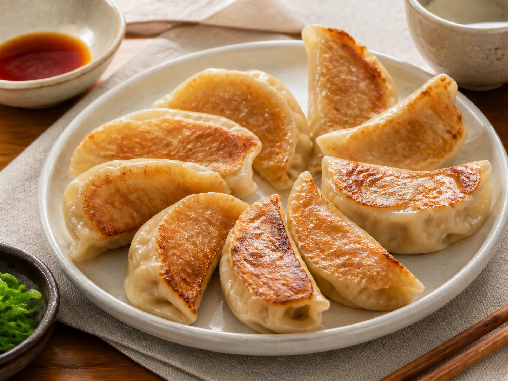

← All recipes
Chinese · Easy
Crispy Pork Dumplings
Juicy dumplings with crisp golden bottoms and a foolproof steam-fry method.

Let’s cook
Step by step
Mix pork, cabbage, spring onions, soy sauce, and sesame oil until sticky.
Put 1 heaped tsp filling in each wrapper. Wet the edge, fold, and pinch firmly closed.
Heat oil in a non-stick pan on medium. Arrange dumplings flat-side down and cook 2 minutes.
Add water and immediately cover. Steam for 6 minutes.
Remove lid and cook 2–3 minutes until the water is gone and bottoms are crisp.
Read this firstIdiot-proof tip
Do not overfill the wrappers; a tight seal matters more than fancy pleats.